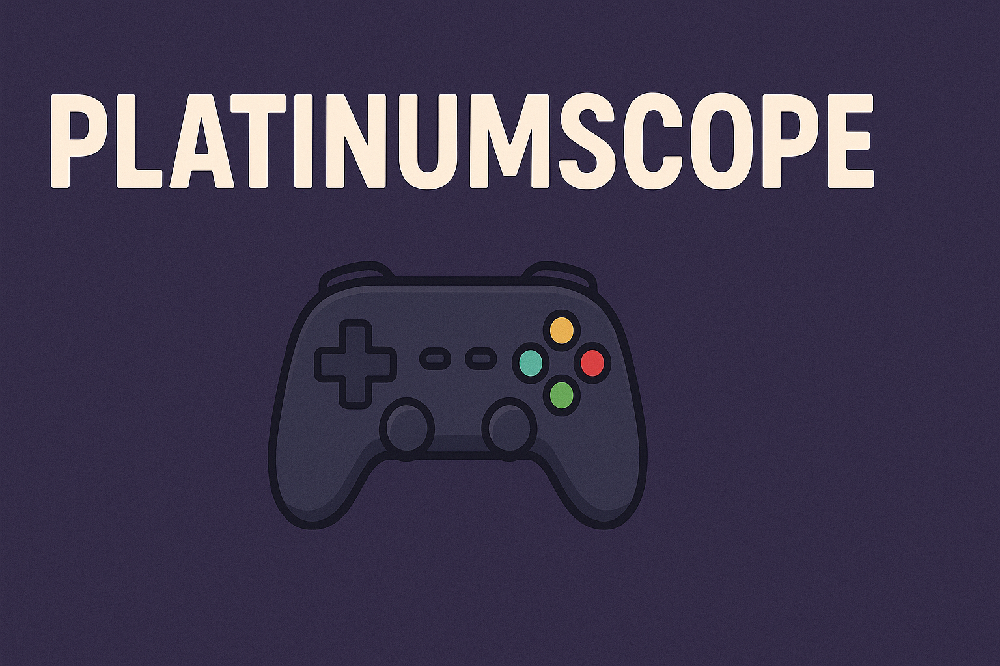

Introducción
Muy buenas a todos los que están interesados en los platinos, porque en esta web solo hablamos de aquellos juegos los cuales ya tengo todos los trofeos.

Muy buenas a todos los que están interesados en los platinos, porque en esta web solo hablamos de aquellos juegos los cuales ya tengo todos los trofeos.
Yo solo soy un programador junior con ganas de conseguir platinos, y no hay mejor manera de mostrar mi entusiasmo con ello que contándoselo a gente y mejorar el portfolio.
La verdad es que no tiene mucho. Mi objetivo principal es motivarme a hacer proyectos personales de temáticas que me gustan, pero sin dejar de mejorar mi portfolio ni mis habilidades de programador.
Lo único que sí que os puede ser útil es mi experiencia jugando y platinando los juegos que tengo (y así veis si os compensa comprarlo/platinarlo).
En cada artículo habrá una descripción técnica de juego (desarrolladores, requisitos, plataformas, etc..), enlaces para comprarlo en diferentes plataformas, mi opinión sobre el juego en sí (historia, mecánicas, etc...) como de la odisea de conseguir su platino.
Echaremos un vistazo sobre los dlc (si se da el caso) y discutiremos si son recomendables o no y si son necesarios para la obtención del platino.
También dejaré los recursos que me ayudaron a mí (si los autores de dichos recursos están de acuerdo) y algunos enlaces más hacia webs que también os ayuden a conseguir ese objetivo.